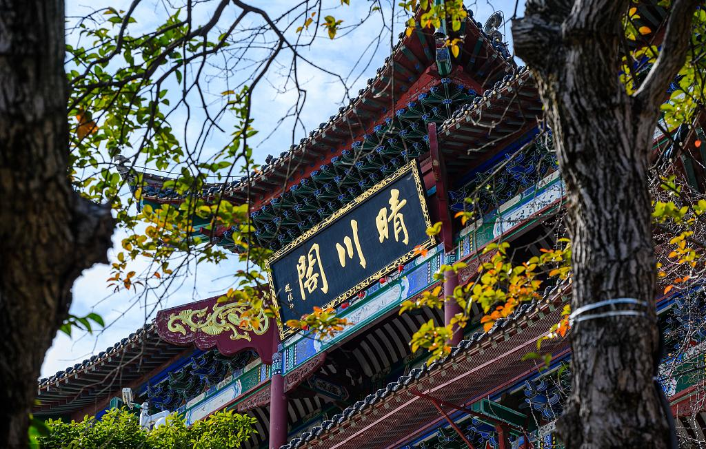

晴川阁
票价：日游免费，但需提前预约;夜游：成人票59.9元，儿童票29.9元，优待票（老人/现役军人/残疾人）41.9元，双人票109.9元，1.2米以下儿童免费
开放：08:30-17:00（周一闭馆）,18:30-21:30（21:00停止入馆）
电话：027-84710887
交通：乘坐30、108、248、531、532、535、553、559、561、648、711、803路公交至晴川阁站下车;或者乘坐地铁6号线至古琴台站A出口，再沿龟山北路步行至晴川大道
地址：湖北省武汉市汉阳区洗马长街86号
详情介绍:
武汉晴川阁坐落于汉阳龟山东麓、长江北岸，与黄鹤楼隔江相望，合称“三楚胜境”，是武汉唯一临江而立的名胜古迹。其名取自崔颢“晴川历历汉阳树”诗句，以“江汉朝宗”的壮阔景观与楚文化底蕴闻名，被誉为“楚天第一楼”。
历史沿革:
始建于明嘉靖年间（1522-1566年），为纪念大禹治水而建，初名“禹王庙”，后因诗得名“晴川阁”。历史上屡毁屡建，清光绪年间（1885年）最后一次重修，1950年代因洪水损毁，1983年依清代形制复建，现为全国重点文物保护单位。
建筑特色:
楚风古韵：主楼为两层歇山顶式阁楼，青砖黛瓦，朱漆梁柱，飞檐翘角饰以瑞兽，与禹稷行宫（祭祀大禹的配殿）、铁门关（三国军事要塞遗址）构成“一阁两翼”格局。
铁门关：复建的明代关隘，拱门高15米，城楼内设三国文化展，展现汉阳古城军事地位。
禹稷行宫：保留清代木构架，殿内陈列《禹贡九州图》及治水工具模型，凸显“禹文化”主题。
文化景观:
诗碑长廊：镌刻历代文人题咏晴川阁的诗文，如李白、陆游等，延续“诗楼”传统。
荆楚雄风碑：清乾隆年间所立，碑文赞颂荆楚山河，为武汉现存最大古碑。
临江视野：登阁可览长江与武汉长江大桥全景，夜间灯光勾勒楼阁轮廓，与黄鹤楼灯光交相辉映。
景区布局:
主轴线：山门→晴川阁主楼→禹稷行宫→朝宗亭。
西侧为铁门关遗址公园，东侧连接大禹神话园（28组雕塑讲述治水传说），北靠龟山森林步道，形成“江、山、楼、园”立体景观带。春日樱花长廊与古阁同框，秋日银杏掩映青瓦，四季景致各异。
晴川阁以“江天一楼”的绝佳视角与诗画意境，串联起大禹精神、三国烽火与文人雅韵，是读懂武汉“江湖之城”历史脉动的静谧窗口。
晴川阁不仅是一座楼阁，更是一个融合历史、生态与当代美学的文化磁场。其“一阁观两江，一步越千年”的时空交错感，使之成为武汉从古代治水文明迈向现代滨水都市的见证者。建议搭配江滩骑行或轮渡体验，感受“江城”立体人文脉络。